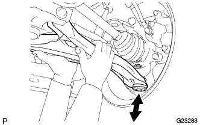
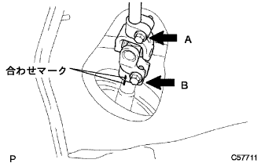
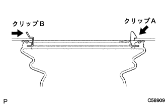
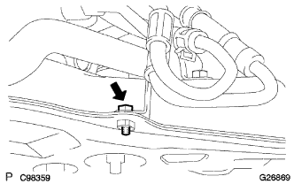
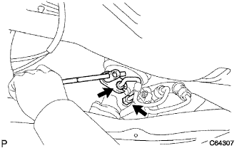
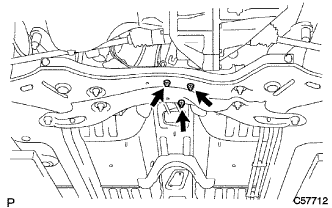
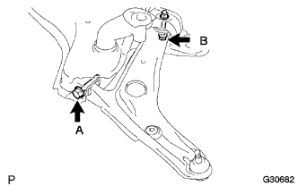

フロントサスペンションロワーアームNo.1 LH 取り外し |
| 1. フロントサスペンション アームSUB-ASSY LWR NO.1 LH点検 |
車両前部をジャッキアップする。
|  |
ロワーアームを手の力（294Ｎ｛30ｋｇｆ｝以上）で上下にゆすり、ボールジョイントにガタが無いことを確認する。
| 2. フロントタイヤ直進状態点検 |
| 3. ステアリングコラムホールカバー プレート取りはずし |
クリップ2個をはずし、ホールカバープレートを取りはずす。
| 4. ステアリングスライディング ヨークSUB-ASSY切り離し |
 |
ステアリングホイールが回転しないようにシートベルトを取り付ける。
|  |
スライディングヨークのコラム側(A)のボルトをゆるめる。
スライディングヨークのギヤ側(B)のボルトを取りはずす。
スライディングヨークとインタミディエイトシャフトに合わせマークを付け、スライディングヨークを切り離す。
|  |
クリップAをはずし、ホールカバーをボデーから切り離す。
| 5. フロントタイヤ取りはずし |
| 6. エンジンアンダ カバー LH取りはずし |
ボルト2本およびスクリュ2本をはずし、エンジンアンダーカバーLHを取りはずす。
| 7. エンジンアンダ カバー RH取りはずし |
ボルト2本およびスクリュ2本をはずす。
ナットをはずし、エンジンアンダーカバーRHを取りはずす。
| 8. エンジンASSY W/トランスアクスル支持 |
エンジンジャッキなどを使用して、エンジンASSY W/トランスアクスルを木片を介して保持する。
| 9. フロントスタビライザ ボルト取りはずし |
フロントスタビライザバーボルトをスパナ（10ｍｍ）で固定し、ナット2個を取りはずす。
フロントスタビライザクッションリテーナNo.1を4個、フロントスタビライザクッション4個、フロントスタビライザバークッションリテーナNo.2およびフロントスタビライザボルトを取りはずす。
 |
反対側も同様の手順で取りはずす。
| 10. プレッシャフィード チューブASSY取りはずし |
|  |
ボルトをはずし、プレツシヤフィードチユーブASSYのクランプをクロスメンバから切り離す。
|  |
ユニオンナットレンチ17を使用して、プレッシャフィードチューブASSYを切り離す。
| 11. タイロッド エンドSUB-ASSY LH切り離し |
コッターピンおよびキャッスルナットを取りはずす。
 |
SSTを使用して、タイロッドエンドをステアリングナックルから切り離す。
| 12. タイロッド エンドSUB-ASSY RH切り離し |
| 13. フロントサスペンション アームSUB-ASSY LWR NO.1 LH切り離し |
コッターピンおよびキャッスルナットを取りはずす。
 |
SSTを使用して、ロワーアームNo.1のボールジョイント部をステアリングナックルから切り離す。
| 14. フロントサスペンション アームSUB-ASSY LWR NO.1 RH切り離し |
| 15. フロントサスペンション クロスメンバSUB-ASSY取りはずし |
|  |
ボルトおよびナット2個をはずし、マウンティイングインシユレータRRをクロスメンバから切り離す。
ミッションジャッキなどで、クロスメンバを支持する。
 |
ボルト4本をはずし、ステアリングリンクASSYが付いた状態でクロスメンバを取りはずす。
| 16. フロントサスペンション アームSUB-ASSY LWR NO.1 LH取りはずし |
ボルト(A)を緩める。
|  |
ナットを固定し、ボルト(B)を緩める。